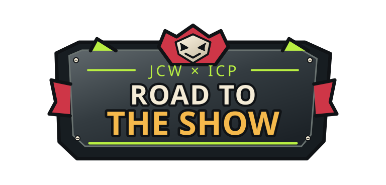
JCW × ICP · Road to the Show
Original typography, a mischievous jester mask, racing pennants and a bolted blacktop plaque. Transparent title artwork, no borrowed band insignia.
768 × 368 · road-to-the-show-logo.svgChunky track props, racing rewards, and clear touch controls. Charcoal steel, bone paint, toxic green, crimson, and amber. Every prop is its own transparent image.
Artwork only. No game assembly, site changes, or website badges. Props have at least 12% clear padding; the cross marks the placement anchor. Textures intentionally fill their bounds.

Original typography, a mischievous jester mask, racing pennants and a bolted blacktop plaque. Transparent title artwork, no borrowed band insignia.
768 × 368 · road-to-the-show-logo.svg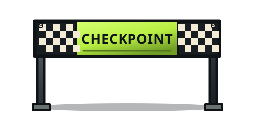
Toxic green timing banner stretched between two short steel track posts, with checkerboard ends. Place across the track using the central ground anchor.
512 × 256 · checkpoint-banner.svg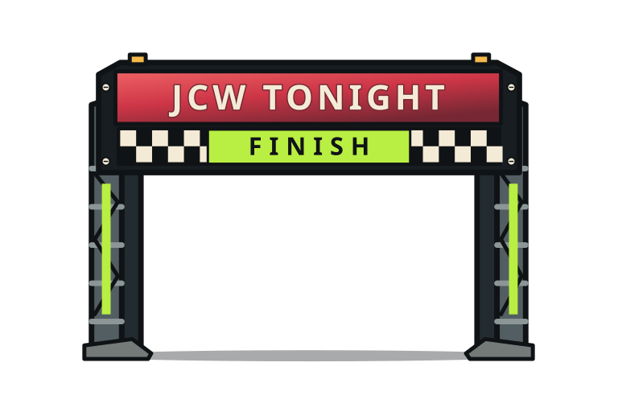
Festival arrival structure with JCW TONIGHT marquee, finish checker strip, bolted steel columns and amber lamps. Center opening is transparent; the racing lane passes beneath.
768 × 512 · finish-gantry.svg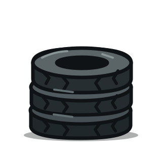
Three thick racing tires with offset tread, visible rubber highlights and an elliptical top opening. Grounded frontal three-quarter prop.
320 × 320 · tire-stack.svg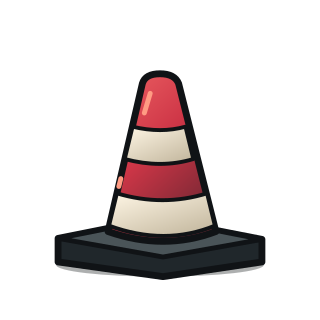
Wide rubber base and crimson cone with high-visibility bone stripes. Thick outlines keep the hazard readable at racing scale.
320 × 320 · traffic-cone.svg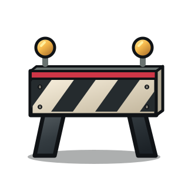
Heavy black and bone striped sawhorse barrier with crimson top edge and amber lamps. Short wide collision hazard.
320 × 320 · road-barrier.svg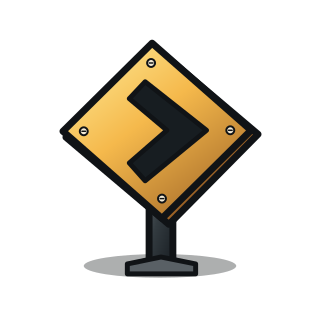
Bolted amber chevron sign on a sturdy post. The arrow points right; reflect the image for a left-turn marker.
320 × 320 · warning-arrow.svg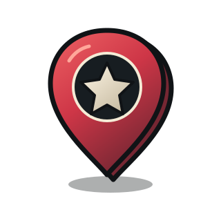
Crimson location marker with a bone star and a charcoal dimensional edge. Can sit above the destination on the route.
320 × 320 · destination-pin.svg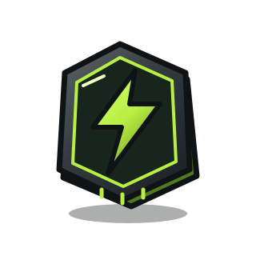
Toxic green lightning token in a beveled charcoal casing with three small charge marks. No external product branding.
320 × 320 · boost-pickup.svg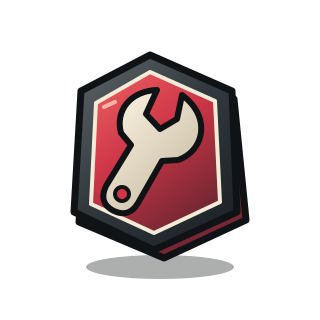
Bone wrench crossed over a crimson field in a beveled steel hexagonal casing. A repair item shaped around tools rather than a medical emblem.
320 × 320 · repair-pickup.svg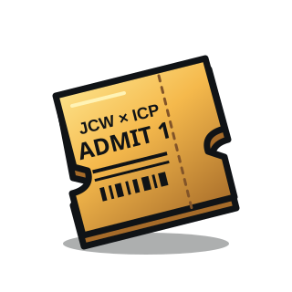
Amber admission ticket with circular side notches, dark ICP/JCW event text and a tear-off barcode. The ticket is drawn at a slight angle with a solid dimensional edge.
320 × 320 · ticket-pickup.svg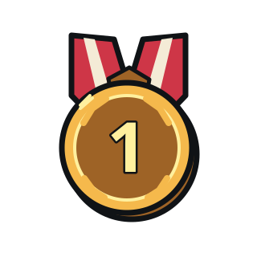
Original gold podium medal with a large 1, checkered ribbon and beveled rim. An in-game race reward asset only.
320 × 320 · gold-medal.svg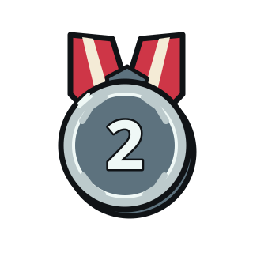
Original silver podium medal with a large 2, checkered ribbon and beveled rim. An in-game race reward asset only.
320 × 320 · silver-medal.svg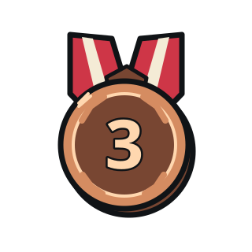
Original bronze podium medal with a large 3, checkered ribbon and beveled rim. An in-game race reward asset only.
320 × 320 · bronze-medal.svgBold bone left arrow on a bevelled charcoal steering pad. Designed for readable thumb controls.
128 × 128 · steer-left-icon.svgBold bone right arrow on a bevelled charcoal steering pad. Designed for readable thumb controls.
128 × 128 · steer-right-icon.svg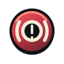
Crimson brake disc with opposing bone calipers and a clear dark center. Compact control icon.
128 × 128 · brake-icon.svg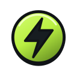
Toxic green touch pad with a charcoal lightning bolt. Compact high-contrast boost control.
128 × 128 · boost-icon.svg
Subtle original seamless 256px asphalt texture with fixed grain and a small amount of worn aggregate. Repeats along both axes; no shadow or padding.
256 × 256 · asphalt-tile.svg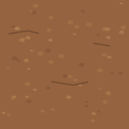
Warm ochre dirt with small polygon pebbles and short tire scuffs. A restrained seamless texture to sit beneath racing action.
256 × 256 · dirt-tile.svg